December 1st
hackphx.comWhomTF ?

Luis Montes
@MONTESLUWhomTF2 ?
Blaine Bublitz
@BlaineBublitzWeb based gaming - Last Decade

In order to play this you must first install...
- Java Applets
- Adobe Flash
- Silverlight
- Unity 3D

Don't bother clicking here, the plugin isn't available for your Operating System and Hardware
Fast Forward a decade
Evolving Standard
Typical Game Engine Functionality
- Rendering / Animation
- Physics
- Input
- Resource Management
- A. I.
- Networking
- Audio
- User Interface
HTML5 Game Engines
FrozenJS !Impact, Crafty, Melon, many others
Canvas
Now, we can paint, too!

Canvas Creation
<canvas id="myCanvas"></canvas>Setting our own height & width
var canvas = document.getElementById('myCanvas');
canvas.setAttribute('height', '450');
canvas.setAttribute('width', '450');
But I want to draw!
var context = canvas.getContext('2d');
// Can also get 3d context (WebGL)
context.fillStyle = '#10B7FB';
// (X, Y, width, height)
context.fillRect(0, 0, 450, 450);
context.strokeStyle = '#B1E3FE';
context.lineWidth = 20;
context.strokeRect(450 / 4, 450 / 4, 450 / 2, 450 / 2);
What about images?!
// Load an image
var img = new Image();
img.onload = function(){
context.drawImage(img, 0, 0);
};
img.src = "images/cheese.jpg";
Game Loop
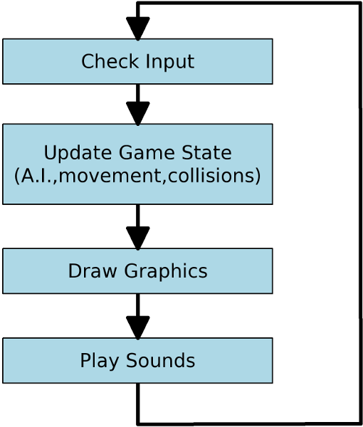A simple JS game loop
var prevTime;
function gameLoop() {
var currTime = new Date().getTime();
elapsedTime = currTime - prevTime;
prevTime = currTime;
handleInput(elapsedTime);
update(elapsedTime);
draw(context);
}
Running the loop
window.requestAnimFrame = (function(){
return window.requestAnimationFrame ||
window.webkitRequestAnimationFrame ||
window.mozRequestAnimationFrame ||
window.oRequestAnimationFrame ||
window.msRequestAnimationFrame ||
function(/* function */ callback, /* DOMElement */ element){
window.setTimeout(callback, 1000 / 60);
};
})();
(function animloop(){
thisgame.gameLoop();
requestAnimFrame(animloop, canvas);
})();
Input Management Initializing
game.initInput: function(im) {
im.addKeyAction(dojo.keys.LEFT_ARROW);
im.addKeyAction(dojo.keys.RIGHT_ARROW);
im.addKeyAction(dojo.keys.UP_ARROW);
im.addKeyAction(dojo.keys.DOWN_ARROW);
};
Using the input
handleInput: function(im){
/* handle left and right movement */
if(im.keyActions[dojo.keys.LEFT_ARROW].isPressed()){
sprite.dx = sprite.maxVelocity * -1;
}
else if(im.keyActions[dojo.keys.RIGHT_ARROW].isPressed()){
sprite.dx = sprite.maxVelocity;
}
else{
sprite.dx = 0;
}
/* handle up and down */
...
};
Web Audio API
Play Sounds like it's 1995
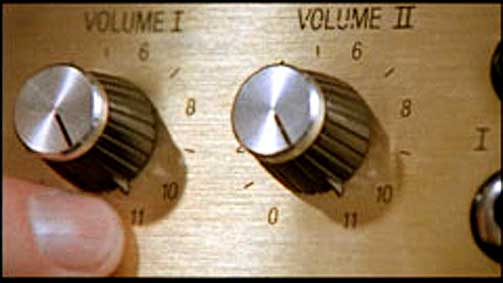Get a reference to the Web Audio context
var audioContext;
// Try/Catch incase it doesn't exist (FF/IE)
try {
audioContext = new webkitAudioContext();
} catch(e) {
alert('Web Audio API is not supported in this browser');
}
How are we getting sounds?
var soundBuffers = {};
var loadSound = function(name, url) {
var request = new XMLHttpRequest();
request.open('GET', url, true);
// Web Audio is binary (not text) - we need an arraybuffer
request.responseType = 'arraybuffer';
// Decode asynchronously
request.onload = function() {
if(audioContext){
audioContext.decodeAudioData(
request.response, function(buffer){
soundBuffers[name] = buffer;
}, onError);
}
}
request.send();
};
Now, let's play the sound!
var playSound = function(name) {
if(audioContext){
// creates a sound source
var soundSource = audioContext.createBufferSource();
// tell the source which sound to play
soundSource.buffer = soundBuffers[name];
// connect the source to the context's destination
soundSource.connect(audioContext.destination);
// play the source now
soundSource.noteOn(0);
}
};
Use the functions
loadSound('wee', '/demos/sounds/wee.wav');
loadSound('yipee', '/demos/sounds/yipee.wav');
loadSound('yahoo', '/demos/sounds/yahoo.wav');
loadSound('pop', '/demos/sounds/pop.wav');
playSound('wee');
playSound('yipee');
playSound('yahoo');
playSound('pop');
Can I use?
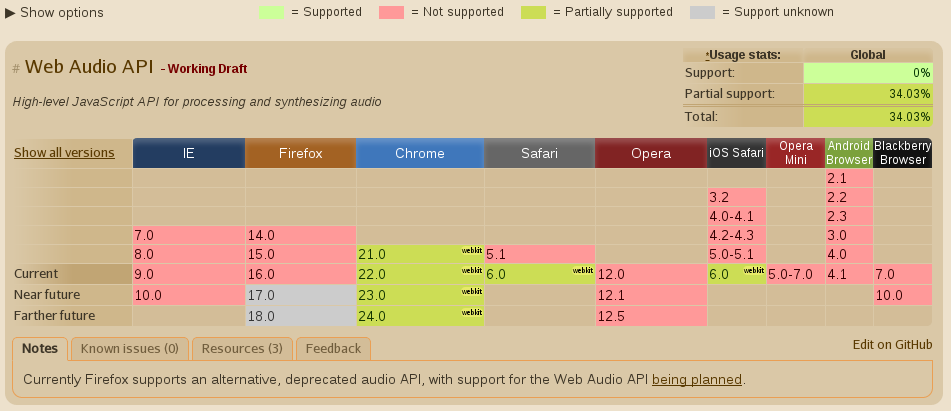WebSockets
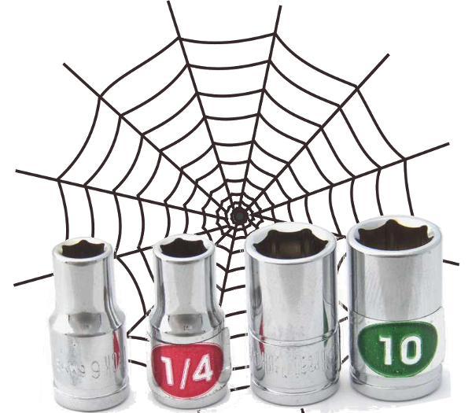Networking in the browser
Can't we already do networking?
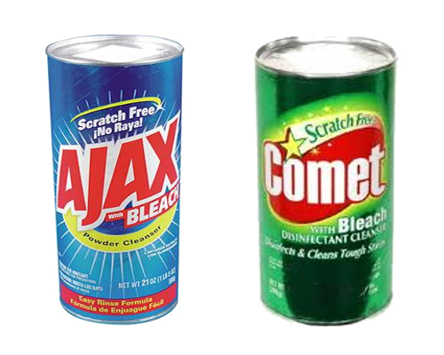Use Node.js !

Node.js
Quick Node primer
var http = require('http');
http.createServer(function (req, res) {
res.writeHead(200, {'Content-Type': 'text/plain'});
res.end('Hello World\n');
}).listen(1337, '127.0.0.1');
console.log('Server running at http://127.0.0.1:1337/');
Socket.io server
var io = require('socket.io').listen(80);
io.sockets.on('connection', function (socket) {
socket.emit('news', { hello: 'world' });
socket.on('my other event', function (data) {
console.log(data);
});
});
Socket.io client
<script src="/socket.io/socket.io.js"></script>
var socket = io.connect('http://localhost');
socket.on('news', function (data) {
console.log(data);
socket.emit('my other event', { my: 'data' });
});
Can I use?
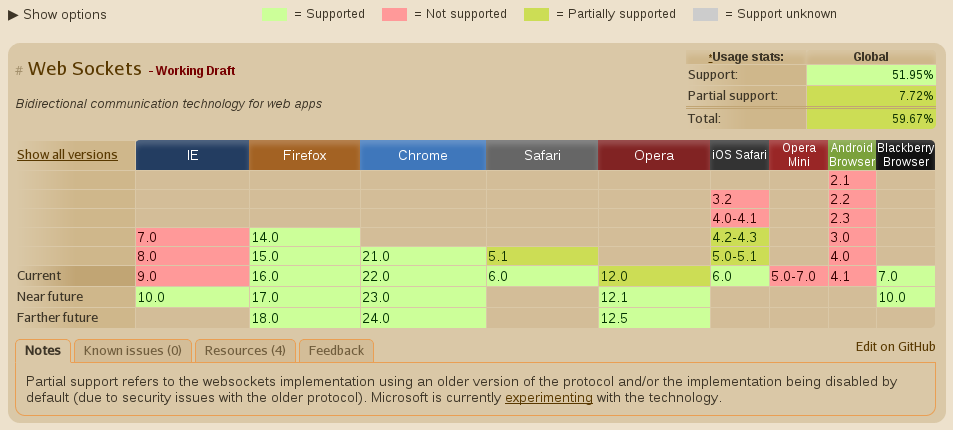WebRTC
The final blow to Flash
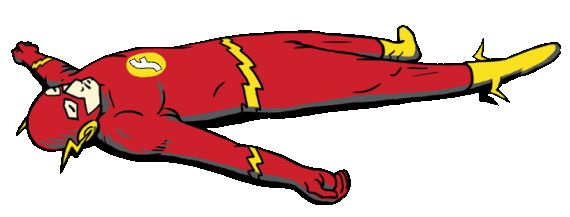The <video> element
<video id="myVideo" autoplay></video>The pain of vendor prefixing
navigator.getUserMedia = navigator.getUserMedia ||
navigator.webkitGetUserMedia ||
navigator.mozGetUserMedia ||
navigator.msGetUserMedia;
window.URL = window.URL || window.webkitURL;
Request access to user's camera
var video;
navigator.getUserMedia({
video: true
}, function(localMediaStream) {
video = document.getElementById("myVideo");
// Create blob url with media stream
video.src = window.URL.createObjectURL(localMediaStream);
}, function(error) {
console.log(error);
});
Cheesy Demo #4
Follow the yellow brick road!Capture something!
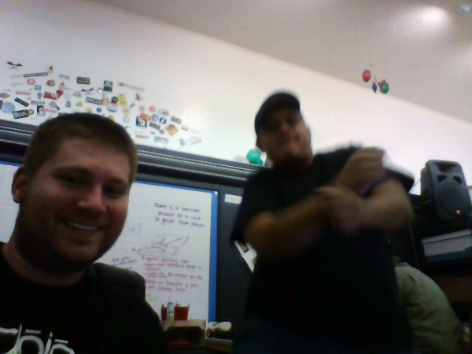How can we capture crazy things?
<canvas id="canvas"></canvas>
var canvas = document.getElementById('canvas');
var context = canvas.getContext('2d');
context.drawImage(video, 0, 0);
Cheesy Demo #5
Gangnam Style!But how do we save it?
<img id="save" />
// Base64 encoded url of image
var imgData = canvas.toDataURL();
var img = document.getElementById('save');
img.src = imgData;
Cheesy Demo #6
Embarrass your friends!Individual pixel data
// get the pixels!
var pixels = context.getImageData(x,y,width,height);
Cheesiest of the cheesy demos
rtc and pixelsCan I use?
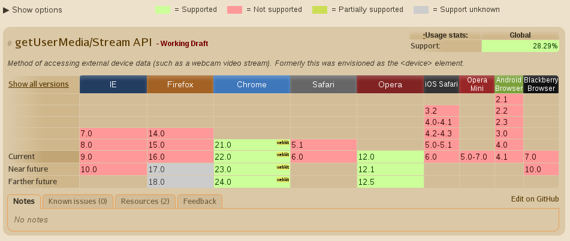WebGL
Taking things to a whole new dimension
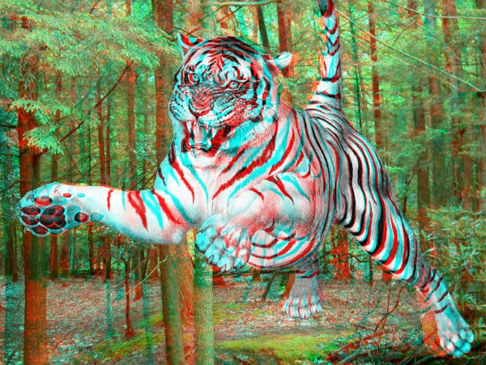WebGL is...
Javascript implementation of the OpenGL ES 2.0 Spec
WebGL is Easy!
Just read the spec
https://www.khronos.org/registry/webgl/specs/1.0Use THREE.js
A scene
A renderer
A camera
An object or two (with materials)
Let's see some code
var renderer = new THREE.WebGLRenderer();
renderer.setSize( window.innerWidth, window.innerHeight );
document.body.appendChild( renderer.domElement );
var camera = new THREE.PerspectiveCamera( 70, window.innerWidth / window.innerHeight, 1, 1000 );
camera.position.z = 400;
var scene = new THREE.Scene();
var geometry = new THREE.CubeGeometry( 200, 200, 200 );
var texture = THREE.ImageUtils.loadTexture('textures/crate.gif');
texture.anisotropy = renderer.getMaxAnisotropy();
var material = new THREE.MeshBasicMaterial( { map: texture } );
mesh = new THREE.Mesh( geometry, material );
scene.add( mesh );
//put this in a requestAnimationFrame:
renderer.render( scene, camera );
Demo
Everyone loves CratesCreepy Demo
Uncanny valleyPutting things together
WebRTC + WebGLCan I use?
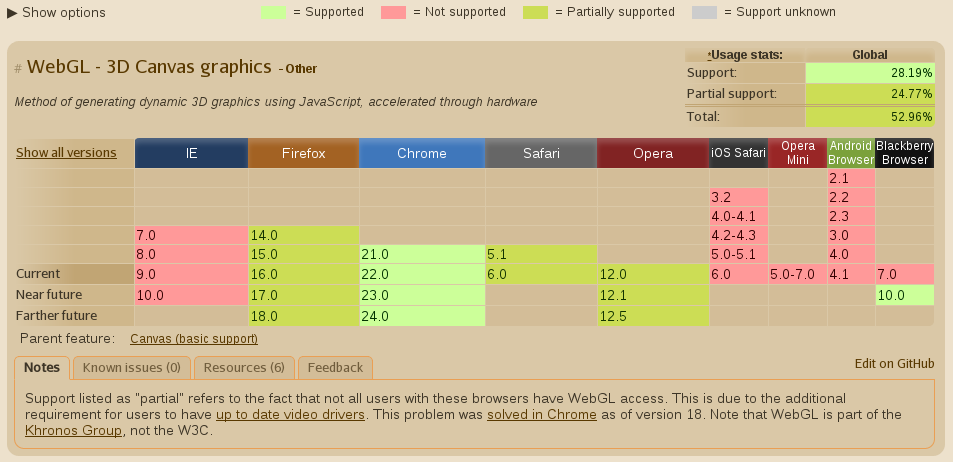Mobile HTML5 Gaming
Everything is working just fine...

iOS
Android
Others
Other HTML5 topics
- Web Workers
- Device Orientation
- Fullscreen
- Mouse Lock
- Gamepad API
Monetization
Web app stores
Venture Capital
- Spaceport.io ($M, undisclosed)
- Game Closure ($12M)
- Goko ($8M)
- Artillery ($2.5M)
- Moblyng ($10M & bankrupt)